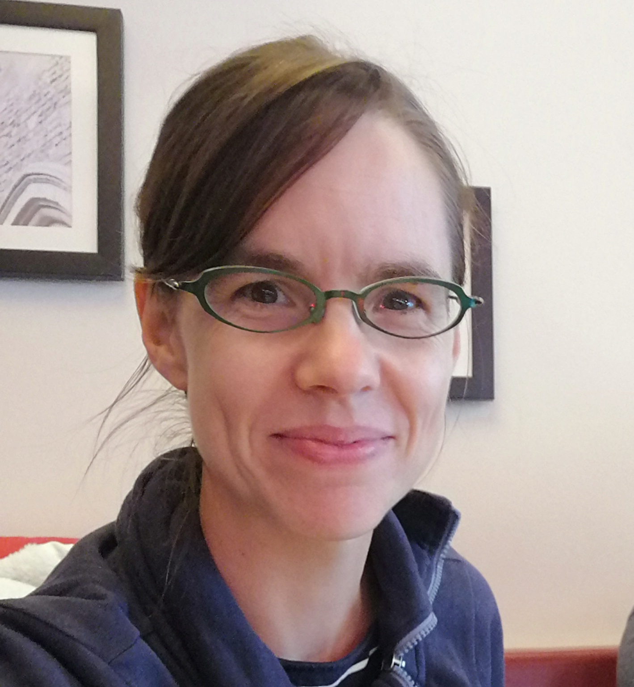

Vanessa Markwardt

Vanessa Markwardt
Webdevelopment Front End
Html CSS JavaScript Bootstrap WordPressandere Techniken
MS Access SQL NaVisionmobil:
0151 68..
email:
vmarkw....@web.de
 GitHub
GitHub
über mich
Für Computer und Programmierung begeistere ich mich schon seit der Schulzeit. Mit Freude erarbeite ich im Team Konzepte und Lösungen, um diese dann auch umzusetzen und damit Prozesse zu unterstützen.
Mein weiteres Engagement gilt hauptsächlich meiner Familie, indem ich mich in der Reformschule meiner Kinder als doppelte Elternvertreterin, im Elternrat, in der AG Kommunikation, in der AG Lernreflexion und als 1. Vorsitzende im Schulverein einsetze.
Lebenslauf
| 1998 | Abitur |
| 1999 | Ausbildung: kaufmännische Assistenz / Schwerpunkt IT |
| 1999 | Informatik-Studium Uni Hamburg |
| 2001-2007 | MS Access DB für Germanischer LLoyd |
| 2007-2008 | NaVision und MS Access für Conion |
| 2008-2018 | 2 Kinder / Still- und Trageberatung, Vereinsaufbau Tragenetzwerk |
| 2018-2019 | Konzept und Enwicklung DB - Zebau GmbH |